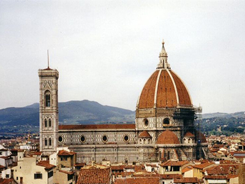
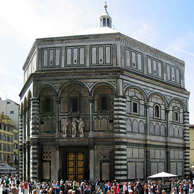
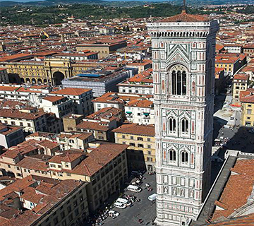
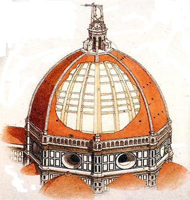

Osnovni podaci:
| Naziv: | Firentinska katedrala |
|---|---|
| Adresa: | Piazza del duomo, Firenca |

Firentinska katedrala (tal. Cattedrale di Santa Maria del Fiore ili Duomo) je stolna bazilika Firentinske nadbiskupije. Po svome značaju u povijesti arhitekture je jedna od najpoznatijih talijanskih građevina, a nalazi se u samom središtu Firence koji je zaštićen kao svjetska baština. Treća je po dužini crkva na svijetu, duga 148 metara.
Zbog ambiciozno zamišljenog plana kupole koji se dugo nije moglo ostvariti, izgradnja je završena tek 173 godine nakon početka gradnje, te je obuhvatila i gotičke i renesansne oblike. Konačno riješenje izgradnje kupole ostvario je Fillipo Brunelleschi, kojemu je to remek-djelo donijelo trajnu slavu u gradu Firenci.


Ispred katedrale nalazi se krstionica koje ima korijene još u ranokršćanskom 5. stoljeću, ali u današnjem obliku je izgrađena u Romanici (11.-12. stoljeće). Eksterijer oktogonalne građevine prekriven je, tipično romaničkim, inkrustracijama zelenog i bijelog mramora.
Sadrži troja brončana vrata, koja su remek djela. Južna vrata je od 1330. do 1336. izradio Andrea Pissano s 28 kvadrata koja predstavljaju scene iz života Ivana Krstitelja i alegorijske figure kardinala i teoloških vrlina. Sjeverna vrata 1402. godine izradio Lorenzo Ghiberti, inspirirana su postojećim južnim vratima; također sadrže 28 ploča koja predstavljaju scene iz Novog zavjeta i Djela evanđeoska. Najslavnija - istočna vrata, tzv. "Rajska vrata", su također djelo Ghibertija (1425.-1452.), ali je na njima majstor bio odvažniji u uporabi perspektive, visokog i plitkog reljefa i portreta, te se ona smatraju prvim djelom renesanse.
Gradnju katedrale započeo je Arnolfo di Cambio 1296. godine. Financirana od firentinske republike, trebala je biti veličanstveni izraz srednjovjekovne vjere, ali i ponosa građanske uprave u Italiji. Lijepa školjka, od bijelog i zelenog mramora, nad gotičkim apsidalnim tlocrtom trebala je formirati mirnu i prostranu unutrašnjost
Tako su mnogi arhitekti kasnije proširivali i mijenjali Di Cambiov izvorni projekt. Među njima je bio i Giotto koji je sagradio odvojeni zvonik (campanil) 1334. godine. Giotto je zamislio visoki i elegantni toranj koji se naoko sužava i postaje lakši s visinom (84 metra). Kako je Giotto preminuo na samom početku gradnje, 1337. godine, njega su završili Andrea Pissano i Francesco Talenti koji su se držali genijevog nacrta.


Filippo Brunelleschi posvetio je četrnaest godina svog života (između 1420. i 1434. godine) kako bi ovoj veličanstvenoj katedrali dodao renesansnu kupolu koja još uvijek izaziva divljenje cijeloga svijeta. Golema kupola s promjerom od 42,21 metara je pravo remek djelo oblikovanja i tehnike. Kupola se nije mogla graditi sredstvima kojima su raspolagali graditelji gotičkih katedrala, te se Brunelleschi dosjetio oživljavanja starih oblika za suvremene potrebe – Renesansa.
Brunelleschi je iznad svakog stuba oktogonalnog tambura nastavio graditi vitka gotička rebra koja tvore oštri luk prema vrhu. Između svakog rebra stavio je dva unutarnja rebra koja se ne vide izvana, a tvore još strmiji zid u obliku riblje kosti kako bi konstrukcija bila jača i lakša. Između tih dvostrukih zidova nalazilo se i stubište koje je vodilo na vrhu. Vanjska obloga od crvenih pločica u kontrastu je sa zelenim i bijelim mramornim pročeljem crkve
| Naziv: | Firentinska katedrala |
|---|---|
| Adresa: | Piazza del duomo, Firenca |